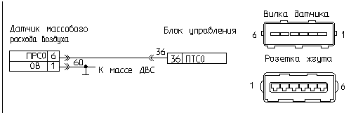

главная → коды ГАЗ
Код 031—низкий уровень сигнала (первого) корректора CO
- Причина 1: обрыв сигнального провода корректора CO.
- Причина 2: замыкание на массу сигнального провода корректора CO.
- Причина 3: неисправность потенциометра коррекции CO.
- Причина 4: неисправность блока управления.
- Способы проверки исправности цепи потенциометра коррекции CO.
Обрыв сигнального провода корректора CO

- Проверьте наличие и надежность подключения розетки жгута к вилке датчика. Если подключение нормальное, то отсоедините от датчика розетку жгута проводов, снимите ее резиновый чехол и осмотрите состояние контактов розетки и подведенных к ней проводов. При необходимости отрихтуйте контакты соединителя или замените их.
- Отсоедините от датчика расхода воздуха розетку жгута проводов, замкните через резистор 510 Ом/0,25 Вт контакт «6» («ПТCO+») и контакт «5» («+12В») розетки датчика и при включенном зажигании проверьте наличие кода неисправности:
- если по прежнему фиксируется код «031», то имеет место неисправность жгута проводов или блока управления двигателем;
- если фиксируется код «032», то имеет место неисправность потенциометра CO датчика.
- Для проверки неисправности цепи жгута отсоедините датчик и блок от жгута проводов и при отключенном зажигании проверьте омметром целостность цепи «36» жгута: от контакта «6» («ПТCO+») розетки датчика до контакта «36» розетки блока. При необходимости восстановите указанную цепь.
- После устранения неисправности включите зажигание и проконтролируйте отсутствие кода неисправности «031».
Замыкание на массу сигнального провода корректора CO
- Отсоедините от датчика расхода воздуха розетку жгута проводов, замкните через резистор 510 Ом/0,25 Вт контакт «6» («ПТCO+») и контакт «5» («+12В») розетки датчика и при включенном зажигании проверьте наличие кода неисправности:
- если по-прежнему фиксируется код «031», то имеет место неисправность жгута проводов или блока управления двигателем;
- если фиксируется код «032», то имеет место неисправность потенциометра коррекции CO датчика.
- Для проверки неисправности цепи жгута отсоедините датчик расхода воздуха и блок от жгута проводов. При отключенном зажигании проверьте омметром соединение цепи «36» жгута с массой двигателя: от контактов «6» («ПТCO+») розетки датчика до металлических деталей двигателя.
- При необходимости устраните неисправность указанной цепи.
- После устранения неисправности включите зажигание и проконтролируйте отсутствие кода неисправности «031».
Неисправность потенциометра коррекции CO
- Отсоедините от датчика расхода воздуха розетку жгута проводов.
- Проверьте омметром на вилке датчика сопротивление между контактами «6» («ПТCO+») и «1» («0В») датчика. Если сопротивление близко к бесконечности (сотни кОм) или остается близким к нулю (менее нескольких Ом) при вращении винта потенциометра, то имеет место внутренний обрыв или КЗ на массу потенциометра CO датчика—датчик неисправен.
- Замените неисправный датчик расхода воздуха на исправный.
- После замены датчика включите зажигание и проконтролируйте отсутствие кода неисправности «031».
Неисправность блока управления двигателем

- Отсоедините блок управления от жгута проводов и внимательно осмотрите целостность контактов розетки жгута и вилки блока. При необходимости отрихтуйте контакты соединителя или замените их. При обнаружении воды в соединителе блок необходимо снять, остатки воды удалить, просушить блок при температуре не выше 85°C.
- Подключите к системе контрольный блок управления. Обратите внимание! Тип и обозначение исполнения контрольного блока должны совпадать с тестируемым блоком. Для этого сравните паспортные данные блоков в процедуре «Паспорт».
- После замены тестируемого блока на контрольный включите зажигание, запустите двигатель и проконтролируйте отсутствие кода неисправности «031».
- Если код «031» не регистрируется на контрольном блоке, то замените тестируемый блок на исправный.
Способы проверки исправности цепи потенциометра коррекции CO
- Отсоедините датчик расхода воздуха от жгута проводов и замкните на бортсеть перемычкой «20 Ом» контакты «5» и «6» розетки датчика.
- Включите зажигание, сбросьте коды неисправности и проверьте наличие кода неисправности:
- если по-прежнему фиксируется код «031»—неисправен блок управления или жгут проводов;
- если фиксируется код «032»—неисправен потенциометр датчика расхода воздуха.
- Отключите перемычку.
- При наличии кода «031» подключите датчик расхода воздуха к жгуту проводов. Подключите вместо тестируемого блока управления контрольный блок. Включите зажигание и сбросьте коды неисправности. Если через 10 секунд по-прежнему фиксируется код «031»—неисправен жгут проводов.
|